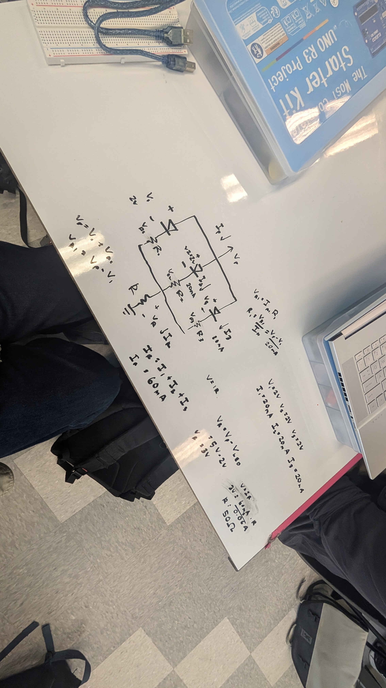
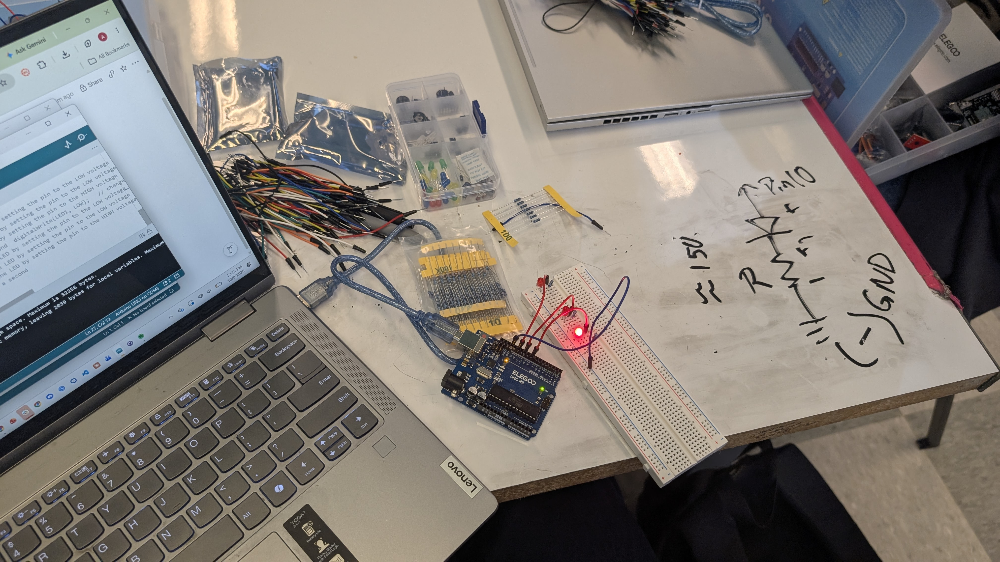
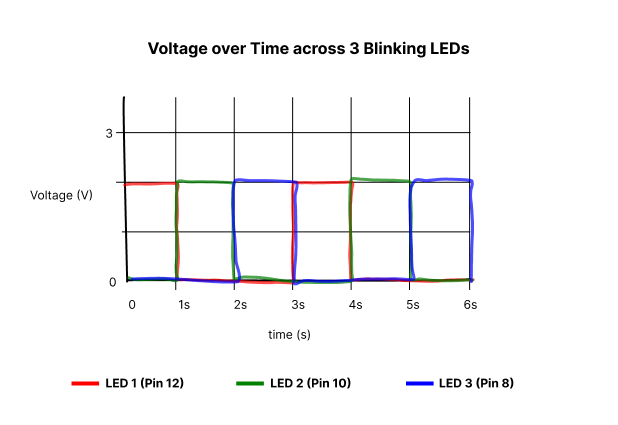

Circuit Operation

Here is all the documentation for assignment 1!


function greet() {
int LED1 = 12;
int LED2 = 10;
int LED3 = 8;
// the setup function runs once when you press reset or power the board
void setup() {
// initialize digital pin LED_BUILTIN as an output.
pinMode(LED1, OUTPUT);
pinMode(LED2, OUTPUT);
pinMode(LED3, OUTPUT);
}
// the loop function runs over and over again forever
void loop() {
digitalWrite(LED1, HIGH); // change state of the LED by setting the pin to the HIGH voltage level
digitalWrite(LED2, LOW); // change state of the LED by setting the pin to the HIGH voltage level
digitalWrite(LED3, LOW); // change state of the LED by setting the pin to the HIGH voltage level
delay(1000); // wait for a second
digitalWrite(LED1, LOW); // change state of the LED by setting the pin to the LOW voltage level
digitalWrite(LED2, HIGH); // change state of the LED by setting the pin to the LOW voltage level
digitalWrite(LED3, LOW); // change state of the LED by setting the pin to the HIGH voltage level
delay(1000); // wait for a second digitalWrite(LED1, LOW); // change state of the LED by setting the pin to the LOW voltage level
digitalWrite(LED1, LOW); // change state of the LED by setting the pin to the LOW voltage level
digitalWrite(LED2, LOW); // change state of the LED by setting the pin to the LOW voltage level
digitalWrite(LED3, HIGH); // change state of the LED by setting the pin to the HIGH voltage level
delay(1000); // wait for a second
}
}
I could technically try to blink 13 LEDs, one for each pin in the Arduino. But that would probably draw ~260 mA of current, which exceeds the maximum total current, which would burn out the Arduino. So I can actually only blink 9 LEDs safely, which would draw ~180 mA.
I need to blink my LEDs Xms before I can no longer tell.
I did use AI tools. I used Claude to refresh my memory on how to write HTML. It gave me more information than I needed, so I just used it for formatting. Everything else is my own thinking. Chat: https://claude.ai/share/7d2aa6ca-e254-4104-92de-5ebaa89c192e